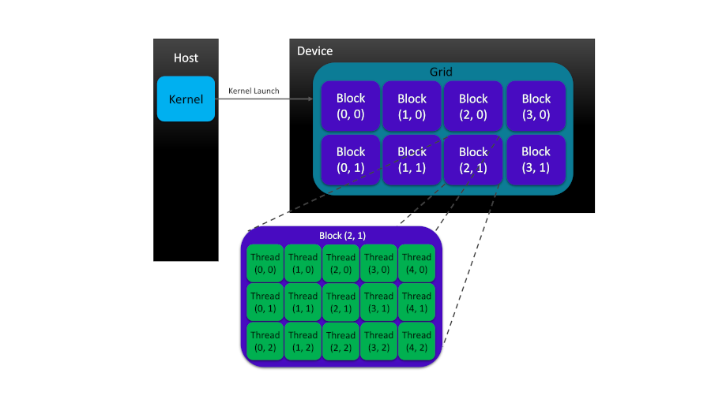

CUDA Programming Model#
Overview
Questions:
What is thread hierarchy in CUDA?
How can threads be organized within blocks and grids?
How can the data be transferred between host and device memory?
How can we measure the wall-time of an operation in a program?
Objectives:
Learning about the basics of the device memory management
Understanding the concept of thread hierarchy in CUDA programming model
Familiarity with the logistics of a typical CUDA program
Our Hello World from previous lesson lacks two important aspects of a CUDA program that are crucial for CUDA programmers: thread hierarchy and memory management. In the next few examples, we will illustrate how threads can be organized within blocks of threads and grids of block in order to control the amount of parallelization in a CUDA program. Finally, we will employ CUDA’s main memory management functionalities to perform an array summation operation on a GPU device.
1. Parallelizing Loops: A Prelude to Thread Hierarchy#
Before getting into the formalities and complexities of the thread hierarchy, let us use
a simple example to show its potential impact and usefulness in CUDA programming:
parallelizing loops. The following code implements and calls cpuPrinter() function to
print the loop indices on the host.
#include <stdlib.h>
#include <stdio.h>
#define N 8
void cpuPrinter(int nlim) {
for (int idx = 0; idx < nlim; idx++)
printf("CPU Prints Idx: %d\n", idx);
}
int main(int argc, char **argv) {
cpuPrinter(N);
return(EXIT_SUCCESS);
}
copy the proceeding code block into a text file save it as cpu_printer.cu. Then, open a terminal and compile and run the program using the following commands
$ nvcc cpu_printer.cu -o cpu_printer
$ ./cpu_printer
Running these commands generates the following output
CPU Prints Idx: 0
CPU Prints Idx: 1
CPU Prints Idx: 2
CPU Prints Idx: 3
CPU Prints Idx: 4
CPU Prints Idx: 5
CPU Prints Idx: 6
CPU Prints Idx: 7
In the aforementioned code block, we fixed the loop iteration number (N=8) in the preprocessor statement
and assumed that it is equal to the number of available threads. In the previous lesson, we demonstrated
how to refactor a host function into a device kernel. The difference here is that according to our
assumption, our kernel should run 8 times and print the same set of indices as that of the host
function call, cpuPrinter().
Our general strategy for refactoring the loops in the host function calls into device kernels consists of
two steps: (i) write the kernel for an individual thread (which in this case is responsible for performing
one iteration), and (ii) launch the kernel with a total number of threads equal to the number of loop
iterations. Let us call our refactored kernel gpuPrinter<<<>>>() and store the modified code in the
gpu_printer_sb.cu script. The refactored code should look like the following
#include <stdlib.h>
#include <stdio.h>
#define N 8
void cpuPrinter(int nlim) {
for (int idx = 0; idx < nlim; idx++)
printf("CPU Prints Idx: %d\n", idx);
printf("\n");
}
__global__ void gpuPrinter(void) {
int idx = threadIdx.x;
printf("GPU Prints Idx: %d\n", idx); /* Write the kernel for individual threads */
}
int main(int argc, char **argv) {
cpuPrinter(N);
gpuPrinter<<<1,N>>>(); /* Launch the kernel for many threads */
/* CUDA will raise an error if N > 1024 */
cudaDeviceSynchronize();
return(EXIT_SUCCESS);
}
Compiling and running this code
$ nvcc gpu_printer_sb.cu -o gpu_printer_sb
$ ./gpu_printer_sb
gives us the desired result
CPU Prints Idx: 0
CPU Prints Idx: 1
CPU Prints Idx: 2
CPU Prints Idx: 3
CPU Prints Idx: 4
CPU Prints Idx: 5
CPU Prints Idx: 6
CPU Prints Idx: 7
GPU Prints Idx: 0
GPU Prints Idx: 1
GPU Prints Idx: 2
GPU Prints Idx: 3
GPU Prints Idx: 4
GPU Prints Idx: 5
GPU Prints Idx: 6
GPU Prints Idx: 7
Pay attention to the two arguments in the execution configuration in the kernel launch:
number of blocks in each grid and number of threads in each block, respectively. If
the gpuPrinter<<<1,N>>>() kernel is supposed to print the same set of loop indices
as that printed by cpuPrinter(N), the simplest approach in this case might be to use
one block with N threads in it.
This strategy works well until the number of loop iterations becomes larger than a threshold value. This threshold is set by the hardware limit for the maximum number of threads in each block which is 1024. As such, one must resort to distributing the threads over multiple blocks while organizing them in the execution configuration in order to be able to match the number of loop iterations by the number of available threads.
Note
All thread blocks have equal number of threads.
Let us continue with our example and for the time being and keep the same number of loop iterations but distribute the threads among multiple blocks. Cope and paste the following code block in an empty text file and save it as gpu_printer_mb_local.cu.
#include <stdlib.h>
#include <stdio.h>
#define N 8
void cpuPrinter(int nlim) {
for (int idx = 0; idx < nlim; idx++)
printf("CPU Prints Idx: %d\n", idx);
printf("\n");
}
__global__ void gpuPrinter(void) {
int idx = threadIdx.x; /* Note that the local index (threadIdx.x) is used */
printf("GPU Prints Idx: %d\n", idx); /* Write the kernel for individual threads */
}
int main(int argc, char **argv) {
cpuPrinter(N);
gpuPrinter<<<2,N/2>>>(); /* Launch the kernel with two blocks threads */
cudaDeviceSynchronize();
return(EXIT_SUCCESS);
}
After compilation and execution, we get
CPU Prints Idx: 0
CPU Prints Idx: 1
CPU Prints Idx: 2
CPU Prints Idx: 3
CPU Prints Idx: 4
CPU Prints Idx: 5
CPU Prints Idx: 6
CPU Prints Idx: 7
GPU Prints Idx: 0
GPU Prints Idx: 1
GPU Prints Idx: 2
GPU Prints Idx: 3
GPU Prints Idx: 0
GPU Prints Idx: 1
GPU Prints Idx: 2
GPU Prints Idx: 3
The output illustrates that the local thread indices (threadIdx.x) on the GPU restart
to zero going form one thread block to the next. In the schematics shown below, the thread and block
indexing patterns for each grid of block is demonstrated for a case where 15 threads are equally
distributed among three blocks.
Note
Each block has a unique zero-based index in a grid and each thread has a unique zero-based index within each block.
In order to reproduce the same set of indices printed by the CPU function, we need to translate the local thread indices to their global variant. As such, we use the following formula for this conversion
$$ \tag{1}\label{EQ:LOCALTOGLOBAL} (\text{globalThreadIdx})_q = \text{threadIdx}.q + \text{blockIdx}.q \times \text{blockDim}.q \qquad \quad \text{where} \qquad q = x, y, z $$
We now employ Eq. \ref{EQ:LOCALTOGLOBAL} in our code to convert the local thread indices to their global variant. After copying and pasting the following code block in a new text file, save it as gpu_printer_mb_global.cu.
#include <stdlib.h>
#include <stdio.h>
#define N 8
void cpuPrinter(int nlim) {
for (int idx = 0; idx < nlim; idx++)
printf("CPU Prints Idx: %d\n", idx);
printf("\n");
}
__global__ void gpuPrinter(void) {
int idx = threadIdx.x + blockIdx.x * blockDim.x; /* The local thread index (threadIdx.x) in the right hand
side should be shifted by an offset value
(blockIdx.x * blockDim.x) to compensate translate it to
a global index */
printf("GPU Prints Idx: %d\n", idx); /* Write the kernel for individual threads */
}
int main(int argc, char **argv) {
cpuPrinter(N);
gpuPrinter<<<2,N/2>>>(); /* Organizing eight threads in two blocks with four threads */
cudaDeviceSynchronize();
return(EXIT_SUCCESS);
}
Compiling and running the aforementioned script yields the expected result provided below
CPU Prints Idx: 0
CPU Prints Idx: 1
CPU Prints Idx: 2
CPU Prints Idx: 3
CPU Prints Idx: 4
CPU Prints Idx: 5
CPU Prints Idx: 6
CPU Prints Idx: 7
GPU Prints Idx: 4
GPU Prints Idx: 5
GPU Prints Idx: 6
GPU Prints Idx: 7
GPU Prints Idx: 0
GPU Prints Idx: 1
GPU Prints Idx: 2
GPU Prints Idx: 3
The output indicates although the same set of indices has been printed for both host function and device kernel, the order of indices is not preserved for the latter. The reason is that the sequential task of performing the same operation within a loop is now distributed among multiple threads running (almost) at the same time while there is no guarantee for their respective order when dispatched by the streaming multiprocessor.
In the aforementioned examples, we assumed the number of loop iterations was equal to the total number of threads. What happens if we dispatch more threads in the execution configuration than the number of loop iterations? How about the opposite case where the number of available threads is smaller than that of elements in the target data structure? We use two techniques presented by Mark Harris in his blog post to deal with the two aforementioned cases, respectively: monolithic kernels and grid-stride loops.
1.1. Monolithic Kernels#
The first scenario is the case where the number of available threads organized through kernel’s
execution configuration and dispatched from kernel launch is larger than the number of elements
in the target data structure. In this case, the extra threads will step over the memory addresses
corresponding to the allocated data structure and attempt to access unallocated memory spots.
This attempt might lead to incorrect results and undefined behavior. In order to avoid accessing
the unallocated memory addresses, we add an if(numThreads < N) conditional statement to our
kernel implementation. Making the aforementioned change in our last code and storing it in a
script named gpu_printer_monolithic.cu, we should have
#include <stdlib.h>
#include <stdio.h>
#define N 8
void cpuPrinter(int nlim) {
for (int idx = 0; idx < nlim; idx++)
printf("CPU Prints Idx: %d\n", idx);
printf("\n");
}
__global__ void gpuPrinter(int nlim) {
int idx = threadIdx.x + blockIdx.x * blockDim.x;
if(idx < nlim) /* Make sure the global index does not go beyond the limit */
printf("GPU Prints Idx: %d\n", idx);
}
int main(int argc, char **argv) {
cpuPrinter(N);
gpuPrinter<<<4,N>>>(N); /* Launch the kernel with 32 threads (4 blocks with 8 threads) */
/* The number of dispatched threads (32) is greater than N */
cudaDeviceSynchronize();
return(EXIT_SUCCESS);
}
After compiling and running the code above, we get
CPU Prints Idx: 0
CPU Prints Idx: 1
CPU Prints Idx: 2
CPU Prints Idx: 3
CPU Prints Idx: 4
CPU Prints Idx: 5
CPU Prints Idx: 6
CPU Prints Idx: 7
GPU Prints Idx: 0
GPU Prints Idx: 1
GPU Prints Idx: 2
GPU Prints Idx: 3
GPU Prints Idx: 4
GPU Prints Idx: 5
GPU Prints Idx: 6
GPU Prints Idx: 7
It might be interesting to mention that the name monolithic kernel is a reminder of the adopted conditional statement and our initial assumption that the total number of available threads is larger than the number of elements in the data structure.
1.2. Grid-Stride Loops#
In a situation when the number of available threads is less than what is necessary for a one-to-one
mapping between the threads and data elements, each thread within a kernel might have to work on
multiple data. In dealing with this case using grid-stride loop, we include our kernel
operation in a for() loop where the thread indices will have to be incremented by the total
number of dispatched threads (grid stride) for every round of work. For example, if our data structure
has 50 elements but we have dispatched 25 threads in our kernel launch, each thread has to
operate on two different data elements. Then, thread 0 performs work on element 0, thread 1 on element 1,
…, thread 24 on element 24. Then, the for loop increments the thread indices by adding the grid size
(the total number of dispatched threads, here, 25). As such, in the second iteration, thread 25 (0 + 25)
operates on element 25, thread 26 (1 + 25) on element 26 … thread 49 (24 + 25) on element 49.
Let us get back to the previous example and see how it changes in this scenario. Copy the following
code block and save it in a script named gpu_printer_grid_stride_loop.cu.
#include <stdlib.h>
#include <stdio.h>
#define N 8
void cpuPrinter(int nlim) {
for (int idx = 0; idx < nlim; idx++)
printf("CPU Prints Idx: %d\n", idx);
printf("\n");
}
__global__ void gpuPrinter(int nlim) {
int idx = threadIdx.x + blockIdx.x * blockDim.x;
int stride = 2; /* Manually initialized. Not good! */
for(int i = idx; i < nlim; i+=stride) /* grid-stride loop */
printf("GPU Prints Idx: %d\n", i);
}
int main(int argc, char **argv) {
cpuPrinter(N);
gpuPrinter<<<1, 2>>>(N); /* Launch the kernel 2 threads which is less than 8 */
cudaDeviceSynchronize();
return(EXIT_SUCCESS);
}
After compilation and execution, once again we get the desired output
CPU Prints Idx: 0
CPU Prints Idx: 1
CPU Prints Idx: 2
CPU Prints Idx: 3
CPU Prints Idx: 4
CPU Prints Idx: 5
CPU Prints Idx: 6
CPU Prints Idx: 7
GPU Prints Idx: 0
GPU Prints Idx: 1
GPU Prints Idx: 2
GPU Prints Idx: 3
GPU Prints Idx: 4
GPU Prints Idx: 5
GPU Prints Idx: 6
GPU Prints Idx: 7
Note that in this example, we have adopted very small sizes for our data structure (8) and threads (2) for simplicity and clarity of demonstration.
In this case, each thread performs the print operation four times. In this case, initialized the the stride value in our kernel through hard-coding. This is not ideal as we might not know all necessary information for calculating the stride value before the runtime. In the next section, we provide a formal introduction to CUDA thread hierarchy and demonstrate how CUDA provides kernels with all necessary information regarding the thread organization at the runtime.
2. Thread Hierarchy in CUDA#
CUDA exposes a two-level thread hierarchy, consisting of block of threads and grids of blocks, to the programmer in order to allow for thread organization on GPU devices.
As figure demonstrates, each grid is often constructed from many thread blocks. Each block is a group of threads invoked by kernel to perform a specific task in parallel. Each thread in a block has its own private local memory space. However, threads in a block can cooperate to perform the same task in parallel thanks to the shared memory space in the block which makes data visible to all threads in the block for the life time of that block. The cooperation between threads not only can happen in terms of sharing the data and access to it within the block-local shared memory space but also can be realized in the form of block-level thread synchronization.
Within the aforementioned two-level thread hierarchy, each thread can be identified with two parameters:
threadIdx: which refers to the thread index within each blockblockIdx: which stands for the block index within each grid
Both threadIdx and blockIdx identifiers are
built-in structure variables
of integer-based vector-type, uint3, assigned to each thread by CUDA
runtime application. The internal assignment of these variables are driven by kernel
execution which makes them accessible to that kernel. Components of the threadIdx or blockIdx
structure variables, i.e., threadIdx.x, threadIdx.y, and threadIdx.z as well as
blockIdx.x, blockIdx.y, and blockIdx.z allow for a three-dimensional organization of
blocks and grids in CUDA. The dimensions of grids of blocks and bocks of threads can be
controlled via the following CUDA built-in variables, respectively
gridDim: which refers to the grids of block object dimensionblockDim: which indicates the block of threads’ dimension
The blockDim and gridDim variables are structures of dim3 type with x, y, z fields
for Cartesian components.
Let’s write a simple kernel that shows how blocks of threads and grids of blocks can be organized and identified in a CUDA program:
#include <cuda_runtime.h>
#include <stdlib.h>
#include <stdio.h>
__global__ void printThreadID() {
/* For each thread, the kernel prints
* the threadIdx, blockIdx, blockDim,
* and gridDim, respectively.
*/
printf("threadIdx:(%d, %d, %d), \
blockIdx:(%d, %d, %d), \
blockDim:(%d, %d, %d), \
gridDim:(%d, %d, %d)\n", \
threadIdx.x, threadIdx.y, threadIdx.z, \
blockIdx.x, blockIdx.y, blockIdx.z, \
blockDim.x, blockDim.y, blockDim.z, \
gridDim.x, gridDim.y, gridDim.z);
}
int main(int argc, char **argv)
{
/* Array size */
int numArray = 6;
/* Number of threads in blocks */
int numBlocks = 2;
/* Organizing grids and blocks */
dim3 block(numBlocks);
dim3 grid((numArray + block.x - 1) / block.x);
/* Let the user know that the dimensions will be printed from the host */
printf("Printing from the host!\n");
/* Print the grid and block dimensions from the host */
printf("[grid.x, grid.y, grid.z]: [%d, %d, %d]\n", grid.x, grid.y, grid.z);
printf("[block.x, block.y, block.z]: [%d, %d, %d]\n\n", block.x, block.y, block.z);
/* Indicate that the dimensions will now be printed from the device */
printf("Printing from the device!\n");
/* Print the grid and block dimensions from the device */
printThreadID<<<grid, block>>>();
/* Performing house-keeping for the device */
cudaDeviceReset();
return(EXIT_SUCCESS);
}
Running this code will generate the following output:
Printing from the host!
[grid.x, grid.y, grid.z]: [3, 1, 1]
[block.x, block.y, block.z]: [2, 1, 1]
Printing from the device!
threadIdx:(0, 0, 0), blockIdx:(0, 0, 0), blockDim:(2, 1, 1), gridDim:(3, 1, 1)
threadIdx:(1, 0, 0), blockIdx:(0, 0, 0), blockDim:(2, 1, 1), gridDim:(3, 1, 1)
threadIdx:(0, 0, 0), blockIdx:(2, 0, 0), blockDim:(2, 1, 1), gridDim:(3, 1, 1)
threadIdx:(1, 0, 0), blockIdx:(2, 0, 0), blockDim:(2, 1, 1), gridDim:(3, 1, 1)
threadIdx:(0, 0, 0), blockIdx:(1, 0, 0), blockDim:(2, 1, 1), gridDim:(3, 1, 1)
threadIdx:(1, 0, 0), blockIdx:(1, 0, 0), blockDim:(2, 1, 1), gridDim:(3, 1, 1)
Now, let’s get back to our code and analyze it step by step
in order to understand the mechanistic details of thread
organization in CUDA programming. First, you might have noticed
that we have included cuda_runtime.h header file in addition to
stdio.h and stdlib.h that provide access to printf() functions
and status macros in C, respectively. The
CUDA runtime API
manages the kernel loads, parameter passes and configurations
before kernel execution. CUDA runtime consists of two main parts:
(i) a C-style function interface (cuda_runtime_api.h),
and (ii) a C++-style interface (cuda_runtime.h) built upon C-APIs
as wrapper extensions for programming convenience.
As long as our codes are compiled with nvcc, it manages the
inclusion of CUDA runtime API headers for us. So, you can try even
removing the cuda_runtime.h header from the code but it still compiles
without any issues. The structure of the CUDA runtime API
is detailed in the CUDA Toolkit documentation.
The next part of our code defines the printThreadID() kernel
implementation which is comprised of a single function call to the formatted
print function, printf(). Our code demonstrates that there are two
different sets of grid and block identification variables:
(i) user-defined variables of type dim3 that are defined and visible
on the host side, only,
dim3 block(numBlocks);
dim3 grid((numArray + block.x - 1) / block.x);
and (ii) the built-in thread, block and grid identification variables of
the type uint3 which will be visible on the device and therefore accessible
within the kernel function.
We previously mentioned that the structures of dim3 type have three
fields but in this case, only one value has been passed to both block
and grid object constructors’ argument lists.
As such, the other two undefined variables are automatically initialized
to 1 and ignored (See the output above). It is important to note that the
number of grids in each direction (i.e., x, y, z) is dependent on the
number of threads in blocks through the following formula:
$$ \tag{2}\label{EQ:THRDORG} \text{grids}.q = \left(\frac{\text{numberOfElements} + \text{block}.q - 1}{\text{block}.q}\right), \qquad \quad \text{where} \qquad q = x, y, z $$
In the next part of our code, we then access the block and grid dimension variables within the main function to print them to the screen from the host.
printf("[grid.x, grid.y, grid.z]: [%d, %d, %d]\n", grid.x, grid.y, grid.z);
printf("[block.x, block.y, block.z]: [%d, %d, %d]\n\n", block.x, block.y, block.z);
After that, the grid and block objects can be passed to the kernel execution configuration as arguments:
printThreadID<<<grid, block>>>();
The kernel execution triggers the initialization of the built-in thread,
block and grid identification variables of the type uint3 by the CUDA runtime
which will be visible and accessible to the kernel functions on the device side.
__global__ void printThreadID() {
/* For each thread, the kernel prints
* the threadIdx, blockIdx, blockDim,
* and gridDim, respectively.
*/
printf("threadIdx:(%d, %d, %d), \
blockIdx:(%d, %d, %d), \
blockDim:(%d, %d, %d), \
gridDim:(%d, %d, %d)\n", \
threadIdx.x, threadIdx.y, threadIdx.z, \
blockIdx.x, blockIdx.y, blockIdx.z, \
blockDim.x, blockDim.y, blockDim.z, \
gridDim.x, gridDim.y, gridDim.z);
}
When each active thread runs the kernel, it has access to the aforementioned pre-initialized
identification indices. Therefore, the kernel function printThreadID() can print the thread
identifiers to the screen. Note that in order to improve readability, we have used backslashes, ‘',
to split a long function argument list in printf() function call into multiple lines of code.
Finally, we call the cudaDeviceReset() function to destroy all allocated memory addresses on the device
and restart its state within the current process.
In the following, we present some of the most frequently used functions from CUDA runtime API collection that will be used in our array summation case study.
3. Basics of the Device Memory Management in CUDA#
In our array summation example, (and in many other scientific applications, in general), we will follow a typical pattern in CUDA programming which can be formulated in a series of steps as follows:
Transferring the data from host to device
Kernel execution on the device
Moving the results back from device to host
As we mentioned previously, most CUDA programs have at least two code domains: (i) the host code domain which runs on the host (CPU and its memory), and (ii) the device code domain which is executed on the device (GPU and its memory). The separation (and localization) of data processes in each domain with different architecture type requires a specific strategy for memory management and data transfer between the two processing units. As such, CUDA provides convenient runtime APIs that allow the user to allocate or deallocate the device memory and transfer data between host and device memories.
C/C++ |
CUDA |
Description |
|---|---|---|
Allocate uninitialized memory |
||
Initialize memory |
||
Deallocate memory |
||
Copy memory |
As the table above demonstrates, CUDA adopts a convenient naming style for C/C++ functions
and syntax extensions making it easier for the programmer to manage memory on GPU devices.
NVIDIA adopts lowerCamelCase (Java style) naming style for its CUDA C/C++ extension APIs.
Here, the cudaMalloc() function with the following syntax
__host__ __device__ cudaError_t cudaMalloc(void** devPtr, size_t size)
allocates size bytes of linear memory on the device pointed to by the devPtr double-pointer
variable. As mentioned previously, the __host__ and __device__ qualifiers can be used
together should the kernel be compiled for both host and device.
Note
All CUDA function APIs (except kernel launches) return an error value of
enumerated type,
cudaError_t.
With the memory being allocated on the device, the cudaMemcpy() function, with
the following signature,
__host__ cudaError_t cudaMemcpy(void* dst, const void* src, size_t count, cudaMemcpyKind kind)
can be adopted to transfer count bytes of data from source memory, pointed to by src
pointer, to the destination memory address, pointed to by dst. The direction of data
transfer is inferred from the value of the variable, kind, of cuda memory enumeration type,
cudaMemcpyKind,
which can take one of the following values:
cudaMemcpyHostToHost
cudaMemcpyHostToDevice
cudaMemcpyDeviceToHost
cudaMemcpyDeviceToDevice
cudaMemcpyDefault
CUDA recommends passing cudaMemcpyDefault to cudaMemcpy() function call, in which case, the
transfer direction is automatically chosen based upon the pointer values scr and dst.
Note that cudaMemcpyDefault should only be adopted when unified virtual
addressing (UVA) is supported.
Note
Most kernel launches we consider in this tutorial are asynchronous in their behavior in which
case the control flow is immediately returned to the host after kernel execution. However,
some function calls, such as cudaMemcpy(), are synchronous– the host application stops until
the function completes its task.
4. Summation of Arrays on GPUs#
Copy the following code into an empty text file, rename it to gpuVectorSum.cu and save it.
/*================================================*/
/*================ gpuVectorSum.cu ===============*/
/*================================================*/
#include <stdlib.h>
#include <stdio.h>
#include <stdbool.h>
#include <time.h>
#include <sys/time.h>
#include <cuda_runtime.h>
/*************************************************/
inline double chronometer() {
struct timezone tzp;
struct timeval tp;
int tmp = gettimeofday(&tp, &tzp);
return ((double)tp.tv_sec + (double)tp.tv_usec * 1.e-6);
}
/*-----------------------------------------------*/
void dataInitializer(float *inputArray, int size) {
/* Generating float-type random numbers
* between 0.0 and 1.0
*/
time_t t;
srand( (unsigned int) time(&t) );
for (int i = 0; i < size; i++) {
inputArray[i] = ( (float)rand() / (float)(RAND_MAX) ) * 1.0;
}
return;
}
/*-----------------------------------------------*/
void arraySumOnHost(float *A, float *B, float *C, const int size) {
for (int i = 0; i < size; i++) {
C[i] = A[i] + B[i];
}
}
/*-----------------------------------------------*/
__global__ void arraySumOnDevice(float *A, float *B, float *C, const int size) {
int idx = blockIdx.x * blockDim.x + threadIdx.x;
if (idx < size) {
C[idx] = A[idx] + B[idx];
}
}
/*-----------------------------------------------*/
void arrayEqualityCheck(float *hostPtr, float *devicePtr, const int size) {
double tolerance = 1.0E-8;
bool isEqual = true;
for (int i = 0; i < size; i++) {
if (abs(hostPtr[i] - devicePtr[i]) > tolerance) {
isEqual = false;
printf("Arrays are NOT equal because:\n");
printf("at %dth index: hostPtr[%d] = %5.2f \
and devicePtr[%d] = %5.2f;\n", \
i, i, hostPtr[i], i, devicePtr[i]);
break;
}
}
if (isEqual) {
printf("Arrays are equal.\n\n");
}
}
/*************************************************/
int main(int argc, char **argv) {
printf("Kicking off %s\n\n", argv[0]);
/* Device setup */
int deviceIdx = 0;
cudaSetDevice(deviceIdx);
/* Device properties */
cudaDeviceProp deviceProp;
cudaGetDeviceProperties(&deviceProp, deviceIdx);
printf("GPU device %s with index (%d) is set!\n\n", \
deviceProp.name, deviceIdx);
/*-----------------------------------------------*/
/* Fixing the vector size to 1 * 2^24 = 16777216 (64 MB) */
int vecSize = 1 << 24;
size_t vecSizeInBytes = vecSize * sizeof(float);
printf("Vector size: %d floats (%lu MB)\n\n", vecSize, vecSizeInBytes/1024/1024);
/* Memory allocation on the host */
float *h_A, *h_B, *hostPtr, *devicePtr;
h_A = (float *)malloc(vecSizeInBytes);
h_B = (float *)malloc(vecSizeInBytes);
hostPtr = (float *)malloc(vecSizeInBytes);
devicePtr = (float *)malloc(vecSizeInBytes);
double tStart, tElapsed;
/* Vector initialization on the host */
tStart = chronometer();
dataInitializer(h_A, vecSize);
dataInitializer(h_B, vecSize);
tElapsed = chronometer() - tStart;
printf("Elapsed time for dataInitializer: %f second(s)\n", tElapsed);
memset(hostPtr, 0, vecSizeInBytes);
memset(devicePtr, 0, vecSizeInBytes);
/* Vector summation on the host */
tStart = chronometer();
arraySumOnHost(h_A, h_B, hostPtr, vecSize);
tElapsed = chronometer() - tStart;
printf("Elapsed time for arraySumOnHost: %f second(s)\n", tElapsed);
/*-----------------------------------------------*/
/* (Global) memory allocation on the device */
float *d_A, *d_B, *d_C;
cudaMalloc((float**)&d_A, vecSizeInBytes);
cudaMalloc((float**)&d_B, vecSizeInBytes);
cudaMalloc((float**)&d_C, vecSizeInBytes);
/* Data transfer from host to device */
cudaMemcpy(d_A, h_A, vecSizeInBytes, cudaMemcpyHostToDevice);
cudaMemcpy(d_B, h_B, vecSizeInBytes, cudaMemcpyHostToDevice);
cudaMemcpy(d_C, devicePtr, vecSizeInBytes, cudaMemcpyHostToDevice);
/* Organizing grids and blocks */
int numThreadsInBlocks = 1024;
dim3 block (numThreadsInBlocks);
dim3 grid ((vecSize + block.x - 1) / block.x);
/* Execute the kernel from the host*/
tStart = chronometer();
arraySumOnDevice<<<grid, block>>>(d_A, d_B, d_C, vecSize);
cudaDeviceSynchronize();
tElapsed = chronometer() - tStart;
printf("Elapsed time for arraySumOnDevice <<< %d, %d >>>: %f second(s)\n\n", \
grid.x, block.x, tElapsed);
/*-----------------------------------------------*/
/* Returning the last error from a runtime call */
cudaGetLastError();
/* Data transfer back from device to host */
cudaMemcpy(devicePtr, d_C, vecSizeInBytes, cudaMemcpyDeviceToHost);
/* Check to see if the array summations on
* CPU and GPU yield the same results
*/
arrayEqualityCheck(hostPtr, devicePtr, vecSize);
/*-----------------------------------------------*/
/* Free the allocated memory on the device */
cudaFree(d_A);
cudaFree(d_B);
cudaFree(d_C);
/* Free the allocated memory on the host */
free(h_A);
free(h_B);
free(hostPtr);
free(devicePtr);
return(EXIT_SUCCESS);
}
After saving the code, it can be compiled and run using the following two commands
$ nvcc gpuVectorSum.cu -o gpuVectorSum
$ ./gpuVectorSum
with the output similar to the following
Kicking off ./test
GPU device "GeForce GTX 1650" with index "0" is set!
Vector size: 16777216 floats (64 MB)
Elapsed time for dataInitializer: 0.757348 second(s)
Elapsed time for arraySumOnHost: 0.062009 second(s)
Elapsed time for arraySumOnDevice <<< 16384, 1024 >>>: 0.001885 second(s)
Arrays are equal.
In this case, wall-time measurements indicate that the arraySumOnDevice()
executes more than ten times faster than arraySumOnHost(). Since the
size of arrays we used are very small compared to what makes such measurements
relevant and useful from practical perspective, we do not
intend overstate the importance of these timings and observed savings.
Another major problem with this code is its length.
In the next lesson, we are going to restructure this code by breaking
it into multiple source files when we talk a little bit about the nvcc compiler.
Now, it is time to focus on our code and start analyzing it from the beginning.
4.1. Header Files and Function Definitions#
Our vector addition code, involves three additional new headers: (i)
stdbool.h for including the true and false boolean type definitions,
(ii) time.h for including time_t type and time() function definitions,
and (iii) sys/time.h for adding the timeval and timezone
structure definitions.
In the next section of our code, separated by commented star-shaped lines,
there are four C/C++ function definitions [chronometer(),
dataInitializer(), arraySumOnHost(), and arrayEqualityCheck()]
and one CUDA kernel implementation arraySumOnDevice().
The chronometer() uses timezone and timeval structures and
gettimeofday() function – included by sys/time.h– to define
a utility function that allow us measure the wall-clock time between
any two points in our code.
Note
The gettimeofday() function is supported by GCC compilers and
might not work on Windows. However, there are multiple ways to perform
the timing task within C/C++. For further information, see
here or
take a glance at Advanced Linux Programming Book (section 8.7 gettimeofday: Wall-Clock Time).
The dataInitializer() function accepts pointers to the location of allocated
memories for the input arrays (A and B) on the host and size of the arrays.
The input arrays are then initialized and filled with float-type random
numbers between zero and one.
The arraySumOnHost() function, as its name suggests, is responsible for
performing an element-by-element summation of the two arrays, A and B, on
the host and stores the results into array C. The kernel function
arraySumOnDevice() works similar to its CPU counterpart, arraySumOnHost()
except in its logistics. Although, arraySumOnDevice() kernel is written
for a single thread specified by its thread index variable, idx, when
the kernel is launched with a particular kernel execution configuration
and thread organization, hundreds or thousands of active threads concurrently
perform the same summation operation on individual elements of the arrays A
and B and store the results in array C. This time, the A, B and C vectors are
allocated on device’s global memory.
The arrayEqualityCheck() function performs an element-by-element comparison
of the resulting vectors returned from arraySumOnHost() and
arraySumOnDevice() functions on the host side.
4.2. Structure of the Program#
The next section of our code involves function calls in the main() driver
function. After fetching the name of the program executable from the command
line and printing it to the screen, CUDA runtime functions are adopted to
set the device and then print its name. Setting the device index will be
useful when the system has multiple devices installed. In a miscellaneous
lesson, we will describe how to choose the best (most powerful) available
GPU if the host system has multiple GPU accelerator devices installed.
Summation of arrays on the host side starts by specifying the array sizes
using the left-shit bitwise operator
and pointer declarations to be able to point to the memory
addresses for arrays A and B when we allocate them on the host
using the malloc() function. In order to be able to distinguish between
pointers that refer to the memory addresses on the host and the device,
we prepend the prefixes h_ (for host) or d_ (for device) to the variable names.
Each of the arrays h_A and h_B are then passed to dataInitializer() function
to be filled with random float numbers. After initialization step,
the arraySumOnHost() function sums both arrays A and B together on the host
and stores the resulting array in another allocated memory address on the
host pointed to by the hostPtr variable. We adopted chronometer() to time
the initialization and summations steps and printed those timings to the screen.
The next part of the code is similar to the what we did for the summation
of arrays A and B on the host but this time, we adopt CUDA C APIs instead of
those of C/C++. For example, for memory allocation on the device, we use
cudaMalloc() instead of malloc().
Remember in the first section
of this lesson, we mentioned that each CUDA program has a series of typical steps in
order to perform a specific task. After memory allocation– for arrays d_A and
d_B– on the device, we need to initialize them through copying the content of
the corresponding arrays, h_A and h_B, from the host to their aforementioned
counterparts on the device via adopting cudaMemcpy() functions.
We have just finished the first (out of three) step(s) in a typical CUDA program
where we transferred data from host to device (HtoD) using cudaMemcpy().
Note that the cudaMemcpy() is synchronous meaning that the flow of execution on
the host will stop and wait for cudaMemcpy() to finish its job.
The next step is to execute the kernel arraySumOnDevice() on the device.
In order to do that, we need to organize our threads in blocks and blocks in grids
from the host so that we can access them on the device within the kernel
as mentioned in the previous section. Thread
organization is one of the most important aspects of CUDA programming model that has
a major impact on the performance of our code. In our intermediate and advanced tutorials,
we will constantly keep an eye on this factor and try to optimize the performance
through finding the best possible configuration of threads in blocks and grids through
a profiling-driven approach. As Eq. \eqref{EQ:THRDORG} suggests, fixing the number
of threads in each block (numThreadsInBlocks) for each block dimension determines
the number of blocks in the grid for that dimension. Once we have defined the block
and grid variables on the host, we pass them to the execution configuration
<<<grid, block>>> as arguments in order to launch the kernel on the device.
Compared with synchronous function calls such as cudaMemcpy() where the host
has to wait until its execution is completed, the kernel launches are asynchronous
and the execution flow returns to host right after the kernel is executed.
Since we intend to measure the execution wall-time for arraySumOnDevice()
kernel launch from the host, we need to tell the host to wait for the kernel to complete
its task. This is done by calling cudaDeviceSynchronize() from the host right
after the kernel launch.
When the kernel is launched, thousands of threads gain access to data and resources on GPU and perform the array summation concurrently. This is the motivation behind the concept Single Instruction Multiple Threads (SIMT) which NVIDIA has coined for this type of architecture.
Note
The SIMT architecture is very similar to the Single Instruction Multiple Data (SIMD) variant in Flynn’s Taxonomy. However, their main difference is that in SIMD, all elements of an array should be operated upon simultaneously, whereas in SIMT architecture, multiple threads in the same group, while performing the same instruction, execute the operation independently on their own private data.
The result of array summation on GPU is stored in another array d_C on
device’s global memory. The step three of a CUDA program is to transfer
the resulting data back from device to host (DtoH). Before transferring the data,
we make sure that there was no errors in the last CUDA runtime call through
using cudaGetLastError(). If there was no errors, we transfer the results back to the host using
cudaMemcpy() and store it in host’s allocated memory pointed to by devicePtr
variable. Now that we have the summation results from CPU and GPU stored on the
host memory variables, hostPtr and devicePtr, respectively, we can compare them
using arrayEqualityCheck() function. The final stage of our program performs
housekeeping by deallocating the memories on both device and host.
Key Points
CUDA programming model
Device memory management
Thread hierarchy
Typical operations in a CUDA program